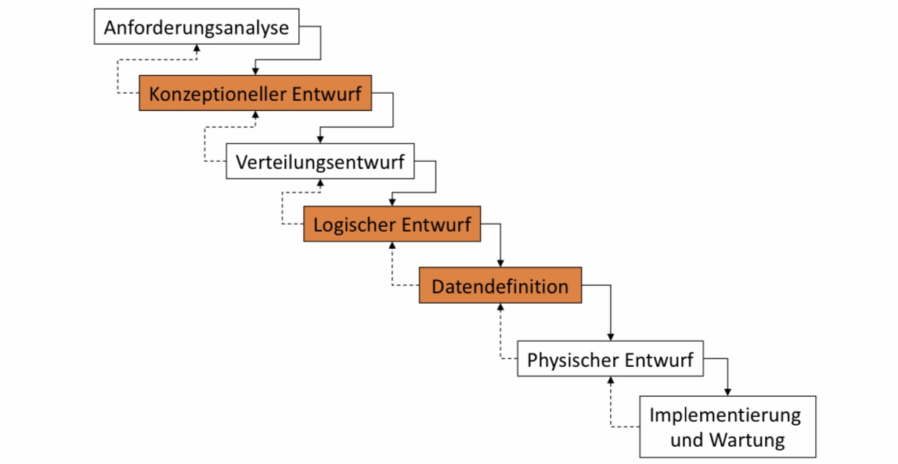

Phasenmodell für den Datenbankentwurf
Contents
4. Phasenmodell für den Datenbankentwurf¶

4.1. Einführung (Entwurfsaufgabe, Entwurfsprozess)¶
■ Datenhaltung für mehrere Anwendungssysteme und mehrere Jahre
□ Daher: besondere Bedeutung
■ Anforderungen an Entwurf
□ Anwendungsdaten jeder Anwendung sollen aus Daten der Datenbank ableitbar sein.
– Möglichst effizient
□ Nur „vernünftige“ (wirklich benötigte) Daten sollen gespeichert werden.
□ Nicht-redundante Speicherung
Abfolge von Entwurfsdokumenten
Von abstrakter Beschreibung…
bis zur tatsächlichen Realisierung in einem DBMS
Verschiedene Beschreibungsformalismen
ER, Relationenmodell, SQL DDL
In jedem Schritt
Informationserhaltung
Konsistenzerhaltung
4.2. Anforderungsanalyse¶
Vorgehensweise
□ Sammlung des Informationsbedarfs in den Fachabteilungen
■ Ergebnis
□ Informale Beschreibung des Fachproblems
– Texte, tabellarische Aufstellungen, Formblätter, …
□ Trennen der Information über Daten (Datenanalyse) von den Information über Funktionen (Funktionsanalyse)
■ „Klassischer“ DB-Entwurf
□ Nur Datenanalyse und Folgeschritte
■ Funktionsentwurf
□ Siehe Methoden des Software-Engineering
4.3. Konzeptioneller Entwurf¶
■ Erste formale Beschreibung des Fachproblems
□ Diskurswelt (Universe of Discourse)
■ Sprachmittel: semantisches Datenmodell
□ ER-Modell (Entity-Relationship-Modell)
■ Vorgehensweise
□ Modellierung von Sichten z.B. für verschiedene Fachabteilungen
□ Analyse der vorliegenden Sichten in Bezug auf Konflikte
– Namenskonflikte (Synonyme, Homonyme)
– Typkonflikte
– Bedingungskonflikte
– Strukturkonflikte
□ Integration der Sichten in ein Gesamtschema
■ Ergebnis: konzeptionelles Gesamtschema, z.B.(E)ER-Diagramm
4.4. Verteilungsentwurf (Partitionierung)¶
■ Sollen Daten auf mehreren Rechnern verteilt vorliegen, muss Art und Weise der verteilten Speicherung festgelegt werden.
■ Z.B. bei Relation KUNDE (KNr, Name, Adresse, PLZ, Konto)
□ Horizontale Partitionierung
– KUNDE_1 (KNr, Name, Adresse, PLZ, Konto)
where PLZ < 50000
– KUNDE_2 (KNr, Name, Adresse, PLZ, Konto)
where PLZ >= 50000
□ Vertikale Partitionierung (Verbindung über KNr Attribut)
– KUNDE_Adr (KNr, Name, Adresse, PLZ)
– KUNDE_Konto (KNr, Konto)
4.5. Logischer Entwurf¶
■ Sprachmittel: Datenmodell des ausgewählten DBMS
□ z.B. DB2, Oracle, … ® relationales Modell
□ Tamino ® XML
□ Dynamo, Redis ® key-value Modell
□ OO, JSON, RDF, …
■ Vorgehensweise
□ (Automatische) Transformation des konzeptionellen Schemas
– z.B. ER in relationales Modell
□ Verbesserung des relationalen Schemas anhand von Gütekriterien
– Normalisierung, Redundanzvermeidung, …
■ Ergebnis: logisches Schema, z.B. Sammlung von Relationen-schemata
4.6. Datendefinition¶
■ Umsetzung des logischen Schemas in ein konkretes Schema
■ Sprachmittel: SQL
□ DDL (data definition language) und
DML (data manipulation language) eines DBMS
– z.B. Oracle, DB2, SQL Server, …
□ Datenbankdeklaration in der DDL des DBMS
– CREATE TABLE …
□ Realisierung der Integritätssicherung
– Schlüssel, Fremdschlüssel, Nebenbedingungen, Datentypen
□ Definition von Benutzersichten
– CREATE VIEW …
4.7. Physischer Entwurf¶
■ DBMS nimmt automatisiert physischen Entwurf vor.
■ Ergänzen um Zugriffsunterstützung zur Effizienzverbesserung
□ z.B. Definition von Indizes
□ CREATE INDEX …
■ Index
□ Datenstruktur für effizienten, Suchschlüssel-basierten Zugriff auf
Datensätze
(<Schlüsselattributwert, Tupeladresse>)
□ Meist als Baumstruktur oder Hashtabelle realisiert
■ Beispiel
□ Tabelle mit 10 GB Daten
□ Festplattentransferrate ca. 50 MB/s
□ Operation: Suchen einer Bestellung (Selektion)
□ Implementierung: sequentielles Durchsuchen
□ Aufwand: 10.240/50 = 205 sec. = 3,5 min.
4.8. Implementierung und Wartung¶
■ Wartung des DBMS
□ Parameter, Festplatten, etc.
■ Datenbank Tuning
□ Weitere Optimierung der physischen Ebene
■ Anpassung an neue Anforderungen
■ Anpassung an neue Systemplattformen
■ Portierung auf neue Datenbankmanagementsysteme
■ Kostenaufwändigste Phase
■ Software Engineering
4.9. Integrationskonflikte¶
■ Namenskonflikte
□ Homonyme: Schloss, Kunde
□ Synonyme: Auto, KFZ, Fahrzeug
■ Typkonflikte
□ Verschiedene Strukturen für das gleiche Element
□ String vs. int vs. date
■ Wertebereichskonflikte
□ Verschiedene Wertebereiche für ein Element
□ KW 1 – 52 vs. Januar, Februar, …, Dezember
■ Bedingungskonflikte
□ z.B. verschiedene Schlüssel für ein Element
□ <\ISBN> vs. <Titel, Autor>
■ Strukturkonflikte
□ Gleicher Sachverhalt durch unterschiedliche Konstrukte ausgedrückt
NICHT enthalten: S.10